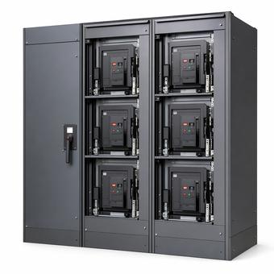
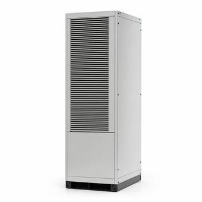
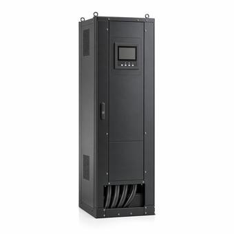
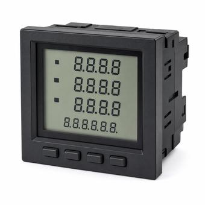
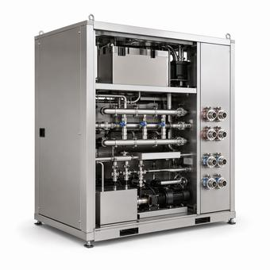

Data Center Power Equipment Reference
Transformers, switchgear, generators, UPS, CDUs and busway for hyperscale and colocation builds — what each one is, how it is rated, and the standards it is built to.
All eleven data-center categories
Start with the data center electrical procurement hub for the sequence — which decisions constrain which, and why the long-lead items have to be ordered against a preliminary spec.








Components & sparesTransformer ComponentsSwitchgear ComponentsGenset Components
Tools for data center engineers
Practice Sandbox
Design a one-line, check sizing & fault current SIZE ITPOD & Skid Designer
Size a power block against a load & redundancy target CALCULATEEngineering Calculators
Transformer sizing, voltage drop, arc-flash, fault current BOMBOM Generator
Component teardown for any transformer, switchgear, or genset PLAN ITRack Elevation Builder
Check U-space, circuit power & weight budgets for a rackWhat's driving data center equipment
Power procurement for new data center capacity is running into the same bottleneck everywhere: large power transformers. Lead times on the largest units are stretching toward four years industry-wide, and utilities are now bidding against hyperscale developers for the same limited pool of transformers and switchgear — pushing some orders three to five years out. Specifying data center power equipment has become as much a lead-time exercise as a spec exercise. Current figures across every category on this sector are tracked live on the Lead-Time Index.
Read the full overview
Power distribution: pad-mount vs. GSU, and where switchgear fits
Most campuses run two distinct transformer types with very different jobs. A pad-mount transformer steps utility service down to the low- or medium-voltage distribution used inside the building — it's the workhorse spec that shows up dozens of times across a large campus, currently quoting around 85 weeks. A GSU (generator step-up) transformer does the opposite job at the utility interconnection point, and on a campus with on-site generation or a dedicated substation it's typically the single highest-value, longest-lead item on the whole electrical BOM — current lead times run past 140 weeks. Confusing the two on an early spec sheet is a common, expensive mistake; see Pad-Mount vs. GSU Transformers for the full breakdown, or How to Read a Transformer Nameplate once you're comparing specific units.
MV switchgear sits between the transformers and the distribution system, and it comes in two families that aren't interchangeable on a spec sheet: metal-clad, built around draw-out breakers for easier maintenance and higher arc-flash containment, and metal-enclosed, a lower-cost fixed-breaker design common on less critical distribution. Data center design almost always specifies metal-clad for anything upstream of critical IT load — see Switchgear Compartment Types Explained for what's actually inside each, and Short-Circuit Studies & Breaker Coordination for how breakers get sized and coordinated once switchgear is on the one-line.
Redundancy: N, N+1, and 2N
Every data center power design gets described by a redundancy notation before anything else. N is just enough capacity to run the load, with zero spare. N+1 adds one extra unit of whatever's being sized — a UPS module, a generator, a cooling unit — so a single failure doesn't take the load down. 2N duplicates the entire path: two independent UPS systems, two independent utility feeds, two of everything, so a full system can go offline for maintenance without ever touching the load. The redundancy level drives equipment count directly — a 2N electrical design roughly doubles the switchgear, UPS, and generator line items on the BOM compared to an N design of the same IT capacity — which is why redundancy level is usually the first number in a capacity conversation, not an afterthought. See N+1 vs. 2N Redundancy Explained for what each scheme survives and costs.
Backup power and cooling
Generators and UPS cover two different failure windows. UPS batteries bridge the seconds to low minutes between a utility outage and generators reaching full speed and taking the load; the generators then carry the full load for as long as fuel holds out. Diesel generator lead times are running around 90 weeks industry-wide. On the mechanical side, rising GPU rack densities are pushing new builds and retrofits from air cooling toward direct-to-chip liquid cooling, with CDUs (coolant distribution units) becoming a standard electrical/mechanical BOM line rather than an exception — the liquid cooling market is on pace for roughly $29B by 2033 as this shift plays out — see Liquid Cooling vs. Air Cooling for how direct-to-chip, immersion, and rear-door heat exchangers compare. PUE (power usage effectiveness — total facility power divided by IT power) is the standard efficiency metric tracked across it: a lower PUE means less power spent on cooling and distribution overhead per watt actually delivered to compute. See PUE Explained for the full formula and what actually drives it down.
Interconnection, grounding, and compliance
For campuses adding on-site generation or requesting new utility capacity, the interconnection queue is frequently a longer critical-path item than any single piece of equipment — see The Grid Interconnection Process, Explained, or the PJM-specific timeline if the campus sits in the mid-Atlantic. Grounding & Bonding Basics and Arc-Flash Boundary Basics cover the two safety-critical checks every data center electrical design has to close out before energizing. And for projects touching federal funding or incentive programs, Buy America / BABA sourcing-documentation rules can constrain vendor selection well before a spec sheet is finalized.
Common questions
How long is the lead time for a data center transformer?
Pad-mount transformers are quoting around 85 weeks and GSU transformers around 144 weeks industry-wide. Configure the exact spec for an indicative lead time, or check the Lead-Time Index for current figures.
What does N, N+1, and 2N redundancy mean?
N is just enough capacity to run the load with no spare. N+1 adds one extra unit so a single failure doesn't take the load down. 2N duplicates the entire power path so a whole system can go offline for maintenance without ever touching the load. Redundancy level drives equipment count directly and is usually the first number set in a capacity conversation.
What's a good PUE for a modern data center?
PUE (power usage effectiveness) is total facility power divided by IT power; 1.0 would mean zero overhead. Modern hyperscale builds using free cooling and liquid cooling commonly report PUE in the 1.1–1.3 range, while older air-cooled facilities often sit closer to 1.5–2.0.
What's included in the Data Centers sector?
Pad-mount and GSU transformers, MV switchgear and breakers, generators and UPS, CDUs, and busway — 1,326 configurations across 50 equipment families.
Why are data center transformers so hard to source right now?
Utilities and hyperscale developers are now bidding for the same limited pool of transformers and switchgear, on top of an existing electrical-steel and skilled-labor shortage.
Industry news & insightsWhat's moving in data centers
3 articles

Grid transformer waits stretch toward four years
Analysts describe a worsening North American and European shortage of large power transformers, with electrical-steel and skilled-labor bottlenecks compounding demand from AI data centers and EV charging buildouts.
Utilities and data centers now bid for the same equipment
A Reuters report finds utilities competing directly with hyperscale developers for the same limited pool of transformers and switchgear, pushing some orders three to five years out and lifting prices industry-wide.

Liquid cooling market on pace for $29B by 2033
Rising GPU rack densities are pushing operators from air to liquid cooling; direct-to-chip CDU deployments are forecast to keep growing at roughly 20% a year as the technology becomes standard in new builds.
Equipment familiesEvery family, with its specs and lead time
50 families
Each family opens in the Data center spec library with its configurations and indicative lead time.
Backup Power
Cabling & Busbar
Cooling
Genset Components
Grounding & Bonding
Monitoring & Controls
Power Distribution
Switchgear & Breakers
Switchgear Components
Transformer Components
Transformers